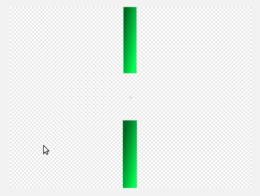
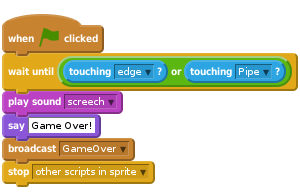

Flappy Parrot
Cấp độ 2
Trong dự án này chúng ta sẽ tạo ra một phiên bản riêng của mình từ trò chơi trên điện thoại nổi tiếng Flappy Bird. Dự án này cần phải dùng Scratch 2.0.
Nhấn nút cách để đập cánh và di chuyển qua kẽ hở của những đường ống!

Nhấn nút cờ xanh, Flappy có xuất hiện ở giữa màn hình và sau đó rơi xuống cuối màn hình?
Tiếp theo, chúng ta sẽ làm cho Flappy bay lên khi nhấn nút cách.
Bây giờ quay trở lại thẻ Scripts và thêm đoạn lệnh này:
Nhấn nút cờ xanh, bạn đã có thể điều khiển Flappy với nút cách chưa? Bạn có thấy rằng đôi khi ấn nút cách nhưng Flappy không di chuyển? Chúng ta sẽ tiếp tục sửa phần này…
Chúng ta muốn Flappy phản ứng lại mỗi khi chúng ta nhấn nút cách. Nhưng mỗi khi nhấn nút cách thì Flappy đều bắt đầu hai nhịp chuyển động. Nếu chúng ta ấn nút cách khi Flappy chưa kết thúc hai nhịp này, Scatch sẽ bỏ qua lần nhấn thứ hai. Để giải quyết vấn đề này, chúng ta sẽ sử dụng một biến để đếm số nhịp cần thực hiện.
Tách rời các khối ở dưới when space key pressed và đặt sang bên cạnh (chúng ta sẽ sử dụng chúng trong chốc lát)
For this sprite only và đặt tên nó là flaps.Thêm đoạn lệnh sau bằng cách kéo các khối mà bạn vừa đặt sang bên cạnh.
when space key pressed sau:Nhấn nút cờ xanh, giờ Flappy đã đập một nhịp cho mỗi lần bạn ấn nút cách chưa?
does Flappy now flap once for each time you press the space bar?
Tiếp theo chúng ta sẽ thêm một số vật cản để Flappy bay qua nhé.
Paint new sprite.Bitmap Mode, nhấn nút Convert to vector.Zoom - để nhìn rõ phần để vẽ.Rectangle, chọn một màu và nhấn nút Filled rectangle.
Color a shape và chọn Horizontal gradient. Chọn hai mầu đậm nhạt cùng tông làm màu mặt trước và màu mặt sau. Khi bạn nhấn để tô màu các ống, màu sắc sẽ được pha theo các màu bạn chọn.Tiếp theo chúng ta sẽ di chuyển các đường ống này di chuyển và sắp xếp chúng một cách ngẫu nhiên để tạo ra một lối đi có vật cản cho Flappy.
Scripts.Nhấn nút cờ xanh, các đường ống được xếp có tạo ra các kẽ hở để bay qua ở các độ cao khác nhau không? Nếu bạn thấy rằng điều khiển Flappy di chuyển qua các kẽ hở này mà không bị va vào các đường ống là rất khó, bạn có thể làm các kẽ hở này to hơn trong hình họa pipe bằng cách thay đổi phần trang phục.
Để làm cho trò chơi có tính thử thách, người chơi phải điều khiển Flappy qua các kẽ hở mà không va vào các đường ống hoặc rìa màn hình. Bây giờ chúng ta sẽ thêm vài khối lệnh để phát hiện nếu Flappy có va phải vật cản.
Sounds.Choose sound from library.Scripts.
Nhấn nút cờ xanh, trò chơi có kết thúc khi Flappy va vào một đường ống hoặc rìa màn hình không?
Người chơi sẽ ghi được một điểm mỗi khi Flappy bay qua một kẽ hở. Tiếp theo hãy thêm chức năng này nhé.
Scripts.For all sprites và đặt tên là score.Nhấn nút cờ xanh, người chơi có ghi điểm khi Flappy bay qua các đường ống không?
Cloud variable (stored on server). Đặt tên biến là hi-scoreNhấn nút cờ xanh, điểm của bạn có được cập nhật thanh hi score? does your score update the hi score?
Khi một vật rơi theo trọng lực, thường vật đó sẽ không rơi ở một tốc độ cố định. Trong thử thách này chúng ta sẽ làm Flappy rơi theo trọng lực.
For this sprite only cho Flappy và đặt tên là rise.Nhấn nút cờ xanh, Flappy có tăng tốc khi rơi hay khi đập cánh không?
Khi người chơi thua, Flappy rơi khỏi rìa màn hình trước khi trò chơi kết thúc.
broadcast GameOver bằng khối broadcast Fall + Bây giờ thêm đoạn lệnh sau:show và đặt lại phương hướng của Flappy khi trò chơi bắt đầu.Nhấn nút cờ xanh, Flappy có rơi khỏi màn hình sau khi va phải đường ống không? Flappy có xuất hiện lại theo đúng hướng khi khởi động lại trò chơi không?
Làm rất tốt, bạn đã hoàn thành và bây giờ có thể chơi trò chơi!
Đừng quên là bạn có thể chia sẻ trò chơi của mình với tất cả bạn bè và gia đình khi ấn nút Share__ trên thanh công cụ nhé!